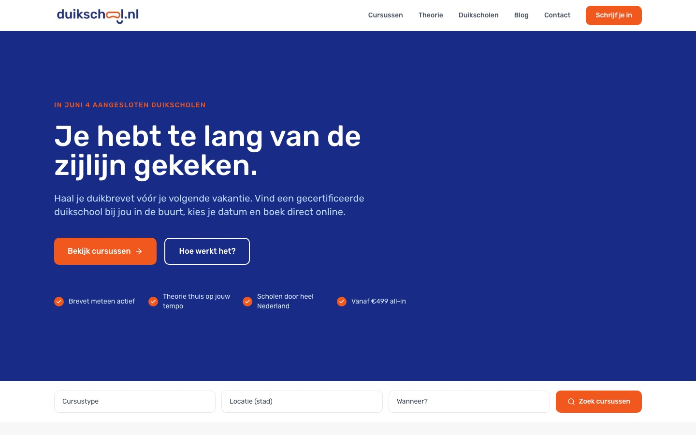
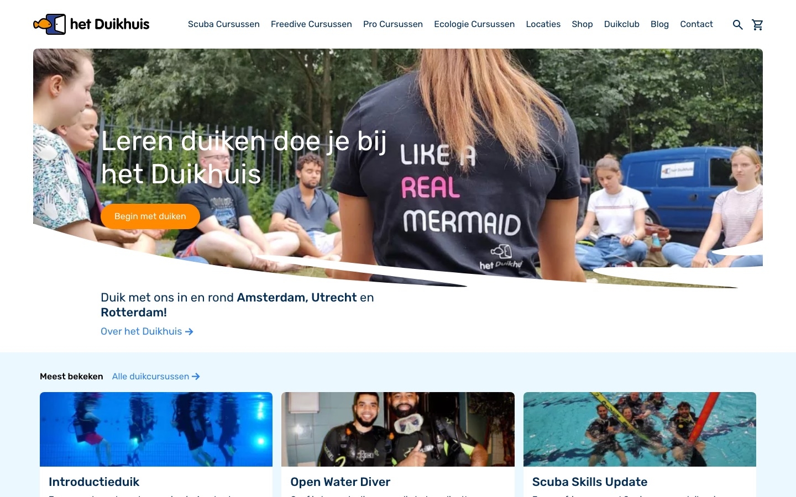
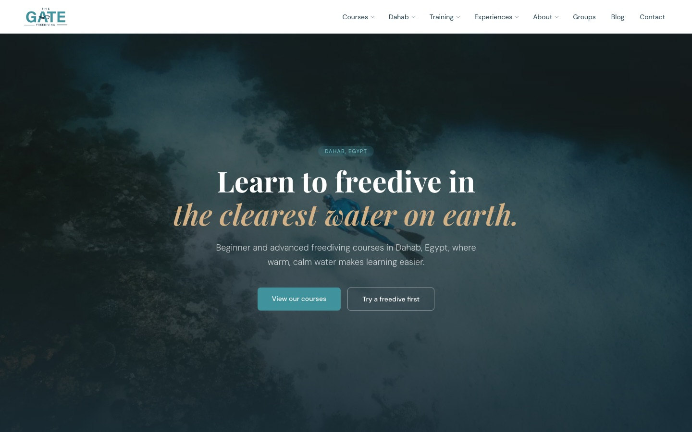
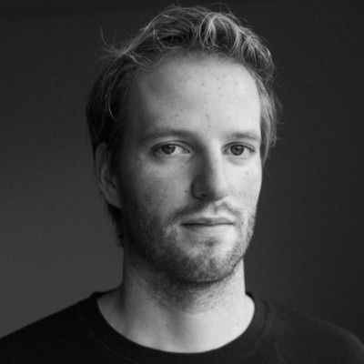
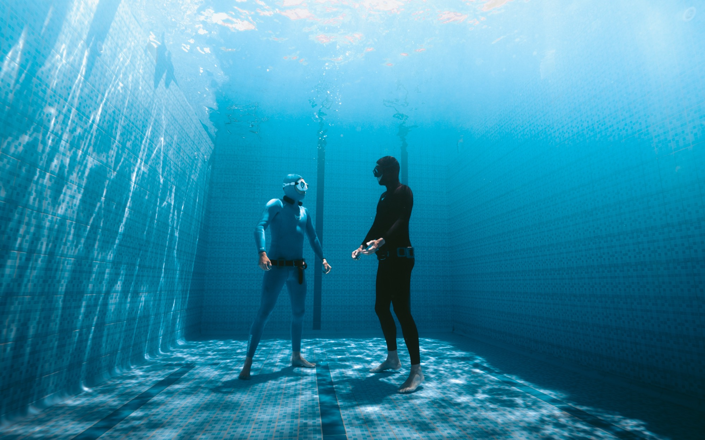

Freelance · Utrecht · open voor projecten
Ik help je bedrijf AI-native worden.
Een bedrijf dat draait op systemen en AI, en zichzelf goedkoop blijft verbeteren. Ik bouw het, draag het werkend over, en stap er weer uit.
De maatstaf is simpel: hoeveel tijd een systeem je teruggeeft. Voor mij gaat die tijd naar de zee, voor jou naar waar je bedrijf hem nodig heeft.
Mail meWat ik bouw
Drie bouwblokken
Business Brain
Je context, processen en doelen vastgelegd, zodat AI-agents het echte werk draaien: rapportage, analyse, routinewerk.
Voor een team, of als Solo voor zelfstandige professionals: dan zet je je eigen brein op in een begeleide sessie en draai je het daarna zelf.
Markdown, git, Claude / Anthropic API
Automatisering en AI op maat
Workflows, integraties en AI-features die het handwerk wegnemen, bovenop de systemen die je al draait. Geen volledige rebuild nodig, en wat ik nieuw bouw houd ik AI-native zodat aanpassen goedkoop blijft.
TypeScript met Anthropic API, Next.js, Astro, Payload, Supabase, ActiveCampaign
Data-dashboards om op te acteren
Al je cijfers in één beeld, met de knoppen om direct bij te sturen. Beslissen op data, niet op onderbuik.
Shopify, Meta, Google, Klaviyo, GA4
Live werk
Recent werk
Mijn eigen Business Brain
Een tweede brein waarmee ik vier bedrijven run, met context, doelen en herbruikbare AI-skills in één systeem. Precies wat ik voor jou bouw.
Dagelijks in gebruik, voor elk besluit en elke sessie, over vier bedrijven heen.
Een marktplaats die ik van concept tot realisatie ontwikkelde, met geautomatiseerde financiële afhandeling via Stripe. De marketing-cockpit haalt Meta- en Google Ads live binnen en genereert advertentievarianten en social content met AI.
Volledig geautomatiseerd, van boeking en betaling tot uitbetaling aan de school en het wekelijkse marketingrapport.

Als ecommerce manager een meerjarige operationele transformatie gedraaid: geautomatiseerde mailcommunicatie naar cursisten via ActiveCampaign, orderkoppelingen en agenda-sync, bovenop de bestaande systemen.
Sinds juli zet een eigen koppeling elke bestelling automatisch door naar ActiveCampaign en de cursusagenda; Zapier kon de deur uit.

Fysiek freedive-centrum waarvoor ik het merk, de online strategie en de website heb neergezet en de marketing draai.
Wie op de naam zoekt, vindt The Gate nu gemiddeld op plek 2 in Google, met acht keer zoveel klikken als in juni.

Voor een marketingbureau
Multi-client performance-dashboard: Meta, Google en Shopify per klant in één beeld, met dagelijkse datakoppelingen en ingebouwde bewaking die alarm slaat vóór de klant iets merkt.
Live binnen enkele weken; de bewaking ving in de eerste week een stilgevallen datakoppeling op voordat iemand het merkte.
Voor een e-commercemerk, via een data-consultancy
AI-conceptantwoorden voor de klantenservice: het systeem leest binnenkomende tickets en de bijbehorende ordergegevens, en zet een concept-antwoord klaar in de helpdesk. Het team controleert en verstuurt.
Van kick-off tot werkende demo bij de klant in een week.
Hoe het werkt
Werkwijze
01
Diagnose
Wat is het echte probleem, niet de eerste oplossing.
02
MVP
Snel een werkende eerste versie. Klopt de richting?
03
Bouw
Klopt het? Dan bouw ik het af.
04
Test
Jij of je opdrachtgever test het in de praktijk.
05
Overdracht
Werkend, met documentatie en de bewaking ingebouwd: monitoring, health-checks en geteste back-ups, zodat je team verder kan.
06
Stap terug
Het draait zonder mij, en je ziet meteen als er iets hapert.
De uitkomst is steeds dezelfde: minder handwerk, en tijd terug voor het werk dat er echt toe doet.
Over mij
Ik ben Liam.


Ik bouw operationele systemen en automatiseringen, met AI waar het echt iets toevoegt. Daarvoor bouwde ik samen een online marketingbureau op en verkocht het.
Waar het me om gaat is tijd. Ik leg de context van een bedrijf vast in een systeem binnen AI, zodat het werk beter en sneller gaat en er tijd overblijft, voor de dingen die energie geven of geld opleveren. Mijn eigen bedrijven draaien op ditzelfde systeem, dus wat ik voor jou bouw, gebruik ik zelf elke dag.
Ik werk het liefst projectmatig: ik duik in het probleem, bouw wat het oplost, draag het werkend over en stap er weer uit. Dat je me daarna niet meer nodig hebt, is precies de bedoeling.
Mijn eigen gewonnen tijd gaat naar de zee. Ik ben freediver en duikinstructeur, en rustig blijven op diepte gaat verrassend goed samen met het uitpluizen van ingewikkelde systemen. Ik bouw ze zodat er tijd is voor het water, en dat is precies wat ik voor bedrijven wil neerzetten.
Contact
Een project of een vraag?
Stuur me een mail, dan kijken we of het past.
contact@liampleijers.nl